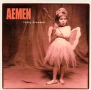

| Artist: | Aemen |
| Title: | Fooly Dressed |
| Label: | Bee Records |
| Length(s): | 54 minutes |
| Year(s) of release: | 2002; Bee & |
| Month of review: | [02/2003] |
| 1) | Another Way | 4.00 |
| 2) | Time | 3.59 |
| 3) | Sanctuary Times | 4.46 |
| 4) | Awakening | 0.27 |
| 5) | Ever Followed A Butterfly's Erratic Flight? | 5.37 |
| 6) | Havelock | 3.38 |
| 7) | The World | 3.55 |
| 8) | Orange-Red | 5.00 |
| 9) | Noble Man | 4.01 |
| 10) | Down | 6.58 |
| 11) | How Are You Today? | 0.45 |
| 12) | Waltz | 4.54 |
| 13) | Before My Eyes | 4.11 |
| 14) | Sorry! | 1.33 |
Time is to be the new single sung in duet with Within Temptations Sharon den Adel. She especially shows herself from her best side here with wonderful, flexible vocals. By comparison, Van der Meijdens voice sounds quite flat. The song itself is a good one: catchy chorus, nice twists in the melodies, plodding, but also some bombast in the orchestral parts. Too bad the drums are so straightforward.
Sanctuary Times was the first single. A bouncy singalong track, but with all the layers in the music, it seems simpler than it is. The organ is nice and full here.
After the short bagpipes instrumental Awakening we run right into Ever Followed A Butterfly's Erratic Flight? Vocals are coming through an old radio here, the chorus is as catchy as they come, and the music has this rolling movement, as of the sea, coming in washes.
Havelock is a sad sad ballad. It sounds more like Have A Luck than Havelock (which I have no idea how it should be pronounced). Plenty of strings on this one, and some quiet piano. As always the melody stands prominent.
On The World we move more in the direction of U2 with again a very optimistic tune. The keyboards sounds more up to date here, the guitar solo is one of the few on the album. Orange-Red are the colours of the band and is a somewhat hallucinating affair: sitar, woozy, twangy, sinister and wah-wah, well all these words apply at some point. Strangely enough the vocals remind me a lot of the Britpop bands, a bit overdone if you know what I mean.
Noble Man is one of the most distinctive tracks because of the vocals. They are extremely colourless and flat which works fantastically well on this song. The song also features some sharp guitar playing alternating with a beautifully rolling atmospheric guitar sound.
Down is the longest track on the album, a slow starter with plenty of atmosphere and a long way to the full and loud ending. How Are You Today? is a short vocal intermezzo, on which the vocals sound even more strongly American. Waltz is exactly that, a waltz. On this song Sharon returns with vocals and the string orchestra returns again as well.
After the Beatlesque Before My Eyes, notwithstanding the heavy Muse style opening a song which has a hairraisingly happy ending, the album ends with Sorry!, only acoustic guitar and reminding me of Oasis.